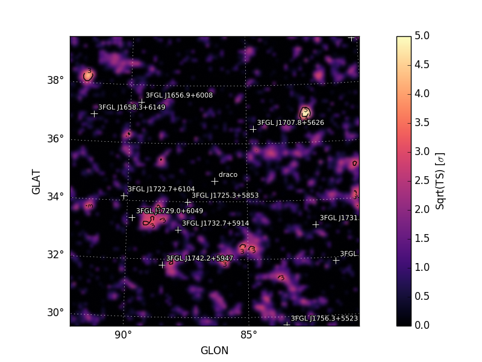

TS Map¶
tsmap() generates a test
statistic (TS) map for an additional source component centered at each
spatial bin in the ROI. The methodology is similar to that of the
gttsmap ST application but with the following approximations:
- Evaluation of the likelihood is limited to pixels in the vicinity of the test source position.
- The background model is fixed when fitting the test source amplitude.
TS Cube is a related method that can also be used to generate TS maps as well as cubes (TS vs. position and energy).
For each spatial bin the method calculates the maximum likelihood test statistic given by
where the summation index k runs over both spatial and energy bins,
μ is the test source normalization parameter, and θ represents the
parameters of the background model. The likelihood fitting
implementation used by tsmap()
only fits the test source normalization (μ). Shape parameters of the
test source and parameters of background components are fixed to their
current values.
Examples¶
The spatial and spectral properties of the convolution kernel are
defined with the model dictionary argument. The model
dictionary format is the same as accepted by
add_source().
# Generate TS map for a power-law point source with Index=2.0
model = {'Index' : 2.0, 'SpatialModel' : 'PointSource'}
maps = gta.tsmap('fit1',model=model)
# Generate TS map for a power-law point source with Index=2.0 and
# restricting the analysis to E > 3.16 GeV
model = {'Index' : 2.0, 'SpatialModel' : 'PointSource'}
maps = gta.tsmap('fit1_emin35',model=model,erange=[3.5,None])
# Generate TS maps for a power-law point source with Index=1.5, 2.0, and 2.5
model={'SpatialModel' : 'PointSource'}
maps = []
for index in [1.5,2.0,2.5]:
model['Index'] = index
maps += [gta.tsmap('fit1',model=model)]
The multithread option can be enabled to split the calculation
across all available cores:
maps = gta.tsmap('fit1',model=model,multithread=True)
Note that care should be taken when using this option in an environment where the number of cores per process is restricted such as a batch farm.
tsmap() returns a maps
dictionary containing Map representations of the TS
and predicted counts (NPred) of the best-fit test source at each position.
model = {'Index' : 2.0, 'SpatialModel' : 'PointSource'}
maps = gta.tsmap('fit1',model=model)
print('TS at Pixel (50,50): ',maps['ts'].counts[50,50])
The contents of the output dictionary are given in the following table.
| Key | Type | Description |
|---|---|---|
| amplitude | Map |
Best-fit test source amplitude expressed in terms of the spectral prefactor. |
| npred | Map |
Best-fit test source amplitude expressed in terms of the total model counts (Npred). |
| ts | Map |
Test source TS (twice the logLike difference between null and alternate hypothese). |
| sqrt_ts | Map |
Square-root of the test source TS. |
| file | str | Path to a FITS file containing the maps (TS, etc.) generated by this method. |
| src_dict | dict | Dictionary defining the properties of the test source. |
The write_fits and write_npy options can used to write the
output to a FITS or numpy file. All output files are prepended with
the prefix argument.
Diagnostic plots can be generated by setting make_plots=True or by
passing the output dictionary to
make_residmap_plots:
maps = gta.tsmap('fit1',model=model, make_plots=True)
gta.plotter.make_tsmap_plots(maps, roi=gta.roi)
This will generate the following plots:
tsmap_sqrt_ts: Map of sqrt(TS) values. The color map is truncated at 5 sigma with isocontours at 2 sigma intervals indicating values above this threshold.tsmap_npred: Map of best-fit source amplitude in counts.tsmap_ts_hist: Histogram of TS values for all points in the map. Overplotted is the reference distribution for chi-squared with one degree of freedom (expectation from Chernoff’s theorem).
| Sqrt(TS) Map | TS Histogram |
|---|---|
|  |  |
{kind=link}
Configuration¶
The default configuration of the method is controlled with the tsmap section of the configuration file. The default configuration can be overriden by passing the option as a kwargs argument to the method.
| Option | Default | Description |
|---|---|---|
exclude |
None | List of sources that will be removed from the model when computing the TS map. |
loge_bounds |
None | Restrict the analysis to an energy range (emin,emax) in log10(E/MeV) that is a subset of the analysis energy range. By default the full analysis energy range will be used. If either emin/emax are None then only an upper/lower bound on the energy range wil be applied. |
make_plots |
False | Generate diagnostic plots. |
max_kernel_radius |
3.0 | Set the maximum radius of the test source kernel. Using a smaller value will speed up the TS calculation at the loss of accuracy. |
model |
None | Dictionary defining the spatial/spectral properties of the test source. If model is None the test source will be a PointSource with an Index 2 power-law spectrum. |
multithread |
False | Split the calculation across number of processes set by nthread option. |
nthread |
None | Number of processes to create when multithread is True. If None then one process will be created for each available core. |
write_fits |
True | Write the output to a FITS file. |
write_npy |
True | Write the output dictionary to a numpy file. |
Reference/API¶
-
GTAnalysis.tsmap(prefix='', **kwargs) Generate a spatial TS map for a source component with properties defined by the
modelargument. The TS map will have the same geometry as the ROI. The output of this method is a dictionary containingMapobjects with the TS and amplitude of the best-fit test source. By default this method will also save maps to FITS files and render them as image files.This method uses a simplified likelihood fitting implementation that only fits for the normalization of the test source. Before running this method it is recommended to first optimize the ROI model (e.g. by running
optimize()).Parameters: - prefix (str) – Optional string that will be prepended to all output files.
- exclude (list) – List of sources that will be removed from the model when computing the TS map. (default : None)
- loge_bounds (list) – Restrict the analysis to an energy range (emin,emax) in log10(E/MeV) that is a subset of the analysis energy range. By default the full analysis energy range will be used. If either emin/emax are None then only an upper/lower bound on the energy range wil be applied. (default : None)
- make_plots (bool) – Generate diagnostic plots. (default : False)
- max_kernel_radius (float) – Set the maximum radius of the test source kernel. Using a smaller value will speed up the TS calculation at the loss of accuracy. (default : 3.0)
- model (dict) – Dictionary defining the spatial/spectral properties of the test source. If model is None the test source will be a PointSource with an Index 2 power-law spectrum. (default : None)
- multithread (bool) – Split the calculation across number of processes set by nthread option. (default : False)
- nthread (int) – Number of processes to create when multithread is True. If None then one process will be created for each available core. (default : None)
- write_fits (bool) – Write the output to a FITS file. (default : True)
- write_npy (bool) – Write the output dictionary to a numpy file. (default : True)
Returns: tsmap – A dictionary containing the
Mapobjects for TS and source amplitude.Return type: